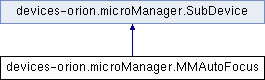

Class for handling autofocus/perfect focus devices. More...
Inheritance diagram for devices-orion.microManager.MMAutoFocus:

Public Member Functions | |
| def | makeUI |
| Provide a button for turning autofocus on and off. | |
| def | toggle |
| Toggle autofocus on/off. | |
 Public Member Functions inherited from devices-orion.microManager.SubDevice Public Member Functions inherited from devices-orion.microManager.SubDevice | |
| def | __init__ |
| def | makeInitialPublications |
| Publish any information needed at the start of the program. | |
| def | getHandlers |
| Generate DeviceHandlers. | |
Public Attributes | |
| button | |
| Public Attributes inherited from devices-orion.microManager.SubDevice | |
| core | |
| name | |
Detailed Description
Class for handling autofocus/perfect focus devices.
Member Function Documentation
| def devices-orion.microManager.MMAutoFocus.makeUI | ( | self, | |
| parent | |||
| ) |
Provide a button for turning autofocus on and off.
Reimplemented from devices-orion.microManager.SubDevice.
| def devices-orion.microManager.MMAutoFocus.toggle | ( | self, | |
event = None |
|||
| ) |
Toggle autofocus on/off.
The documentation for this class was generated from the following file:
- devices-orion/microManager.py